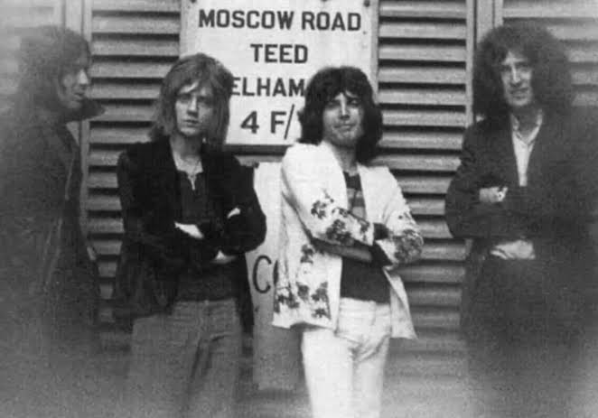
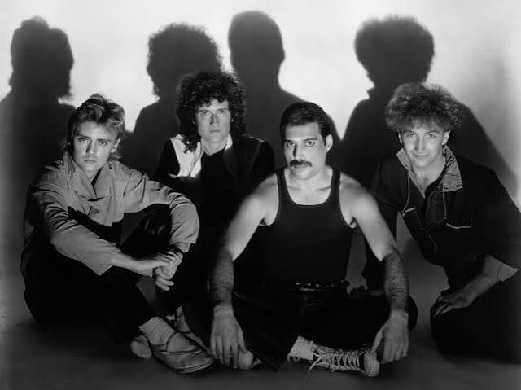
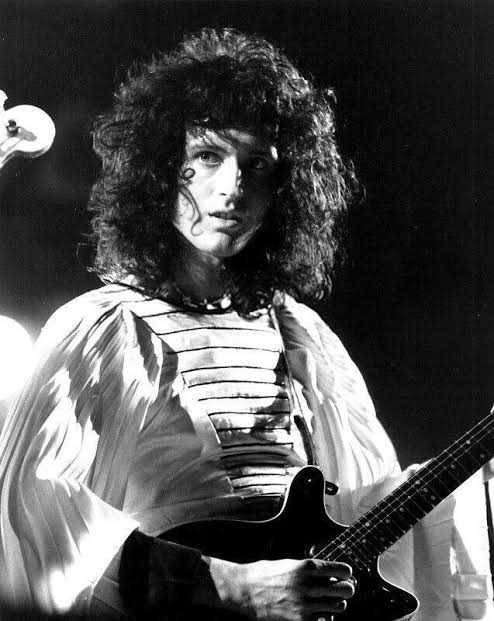
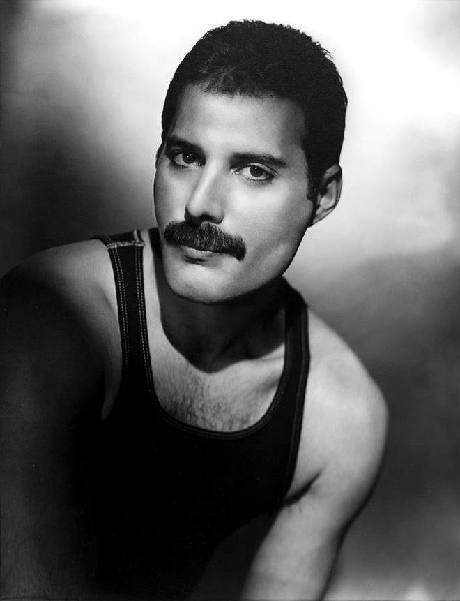
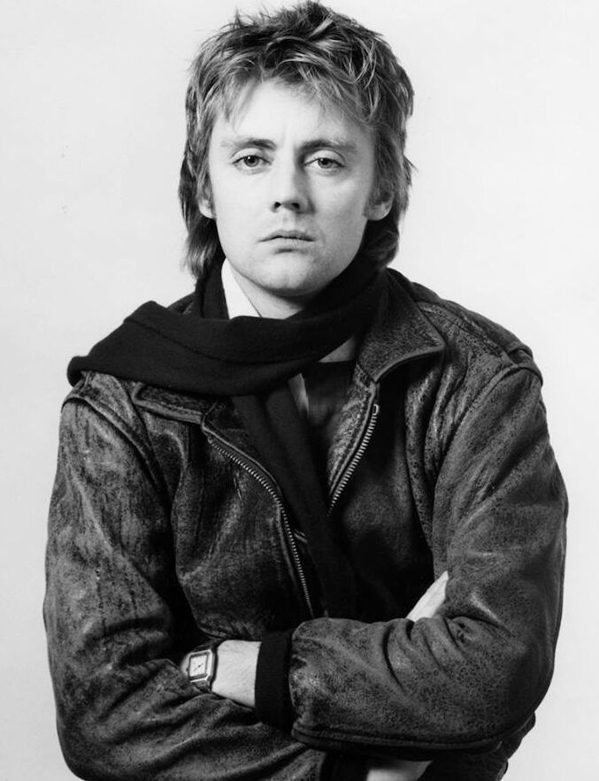
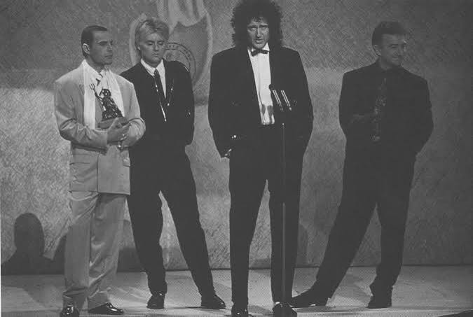
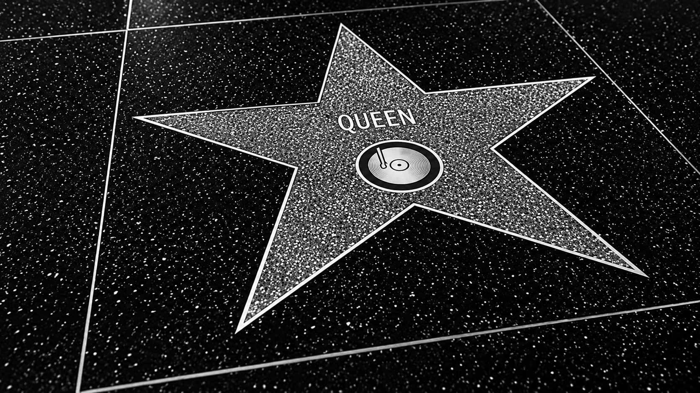

A banda britânica de rock Queen foi formada em 1970, na cidade de Londres. Sua formação clássica era composta por Freddie Mercury, Brian May, Roger Taylor e John Deacon. O grupo destacou-se por combinar diferentes estilos musicais, como rock, hard rock, pop e elementos da música clássica. Essa diversidade contribuiu para a criação de um som original e inovador, que ajudou a banda a alcançar sucesso internacional. Ao longo de sua carreira, o Queen lançou diversos álbuns e canções que se tornaram grandes sucessos. Entre as músicas mais conhecidas estão Bohemian Rhapsody, We Will Rock You, We Are the Champions e Don't Stop Me Now. Essas obras contribuíram para consolidar a banda como uma das mais importantes da história do rock. Um dos momentos mais marcantes da trajetória do grupo ocorreu em 1985, durante o festival beneficente Live Aid. A apresentação do Queen foi amplamente elogiada e é considerada uma das melhores performances ao vivo da história da música. Mesmo após a morte de Freddie Mercury, em 1991, a influência da banda permaneceu forte. Atualmente, o Queen é reconhecido como um dos grupos musicais mais importantes e influentes do mundo, tendo inspirado diversas gerações de artistas e fãs.



Brian May é o guitarrista principal da banda Queen, sendo responsável por compor obras como "We Will Rock You", "The Show Must Go On" e "Save Me".

O astro Freddie Mercury foi o vocalista principal da banda Queen, compondo músicas mundialmente conhecidas como "Bohemian Rhapsody", "We Are the Champions" e "Somebody to Love".
John Deacon é o baixista da banda Queen, tendo composto músicas como "Another One Bites the Dust", "You're My Best Friend" e "I Want to Break Free".

Roger Taylor é o baterista da banda Queen, compondo músicas como "Radio Ga Ga", "A Kind of Magic" e "The Invisible Man".
O sucesso e a relevância do Queen vão muito além dos milhões de discos vendidos e dos recordes quebrados ao longo de sua carreira. A banda revolucionou a indústria musical ao transformar o rock de arena em uma verdadeira experiência teatral e comunitária, criando hinos atemporais que foram feitos sob medida para a participação do público, como as palmas sincronizadas de We Will Rock You. Além de ser pioneiro no formato moderno de grandes turnês em estádios, o grupo também antecipou a era dos videoclipes com a produção visual inovadora de Bohemian Rhapsody em 1975, que mudou para sempre a forma como a música era divulgada. A apresentação lendária do Queen no festival Live Aid, em 1985, é frequentemente coroada por críticos e músicos como o maior show ao vivo da história do rock, demonstrando o carisma inigualável de Freddie Mercury e a conexão magnética da banda com multidões. Mais do que ícones de uma época, o Queen quebrou barreiras de gênero musical, uniu gerações e deixou um legado cultural eterno, provando que a música pode ser ao mesmo tempo artisticamente complexa, incrivelmente popular e imune à passagem do tempo.

